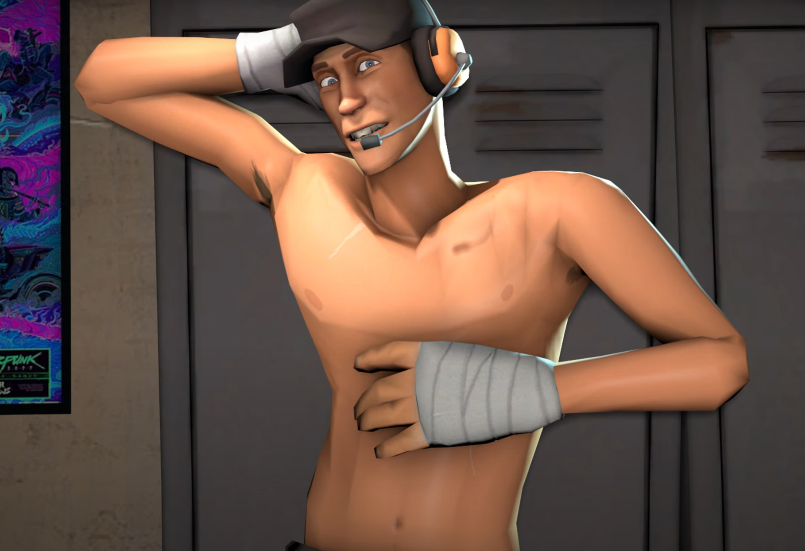

Twink TF2 :3
"Pop quiz: How long's it take to beat a moron to death? [buzzer imitation] Sorry, time's up, you're dead."
About Twink TF2 :3
He's legit just a fucking twink who needs to accept having say gex rather than chasing after Miss Pauling...
Sniper's Characteristics
- Twink Body Allows Him To Dodge Bullets
- Close-Range Combat
- SPEED :3333
- Burst Damage
Other Cool TF2 Characters :3